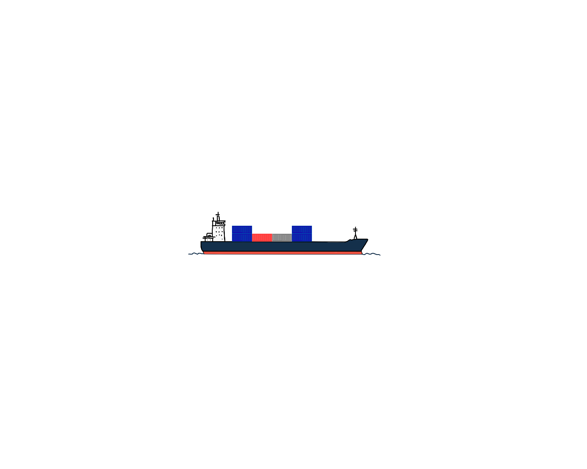

01
Start in 2006.
Nearly 55,000 vessels passed through the Bosphorus that year. The average ship was much smaller than the vessels crossing today.
THE BOSPHORUS, 2006–2025
Turkish government data show fewer vessels passing through the strait, even as total tonnage and average ship size increased.
ScrollVideo: Pexels
The Bosphorus connects the Black Sea with the Sea of Marmara and, beyond it, the Mediterranean.
Falling vessel counts might suggest that the waterway became less busy. The data tell a different story.

01
Nearly 55,000 vessels passed through the Bosphorus that year. The average ship was much smaller than the vessels crossing today.
02
But the ships did not simply disappear. The average vessel passing through the strait grew larger.
03
Vessel counts were down roughly 27%, while average vessel size had increased about 78%.
THE TRAFFIC CHANGED
Annual vessel traffic fell 26.8% between 2006 and 2025.
VESSEL COUNT
A changing line chart comparing vessel traffic, total gross tonnage and average gross tonnage per vessel between 2006 and 2025. Each measure is indexed to 100 in 2006.
Indexed to 2006 = 100. Source: Turkish Ministry of Transport and Infrastructure.
01
Nearly 55,000 vessels crossed the Bosphorus in 2006. By 2025, that number had fallen to just over 40,000.
02
Even as fewer ships passed through the strait, their combined gross tonnage increased from about 476 million to 619 million.
03
Average gross tonnage per vessel climbed from roughly 8,670 in 2006 to more than 15,400 in 2025.
A CHANGING MIX
The growth was not evenly distributed. Container and chemical tanker traffic climbed over the past two decades, while general cargo crossings steadily declined. The Bosphorus today serves a different mix of vessels than it did in 2006.